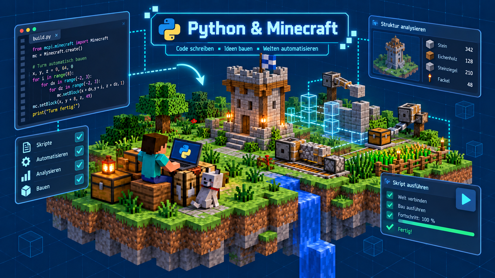

Einführung
Mit Python können wir Minecraft-Welten untersuchen und verändern, Objekte automatisch erzeugen und Abläufe steuern.
So lernen wir, Aufgaben logisch zu planen und mit Python in Minecraft umzusetzen.
In dieser Rubrik entwickeln wir Schritt für Schritt eigene Python-Programme für Minecraft – vom einfachen Erzeugen von Blöcken bis zu automatisierten Bauabläufen und eigenen Spielideen.

Lernziele
- Grundlagen der Python-Programmierung verstehen und anwenden.
- Einblicke in Minecraft-Umgebungen und Spielobjekte gewinnen.
- Einfachere Automatisierungen und interaktive Spielideen entwickeln.